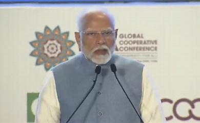

Featured Articles

Current global situation presents a significant opportunity for the cooperative movement: PM Modi
NEW DELHI: Prime Minister Narendra Modi on said the current global situation presents significant opportunity for the cooperative movement. Speaking at the ICA Global Cooperative Conference 2024 at the Bharat Mandapam in New Delhi, PM Modi talked about the importance of integrating the cooperative movement with the circular economy and promoting international collaboration.
Read More
Biden to Eviscerate Trump Today in Iowa Speech
CNN’s New Day previewed an advance copy of a stump speech that Joe Biden plans to give during a campaign visit today in Iowa later on Tuesday, and according to the on-screen chyron, the former Vice President will “eviscerate” President Donald Trump.
Read More